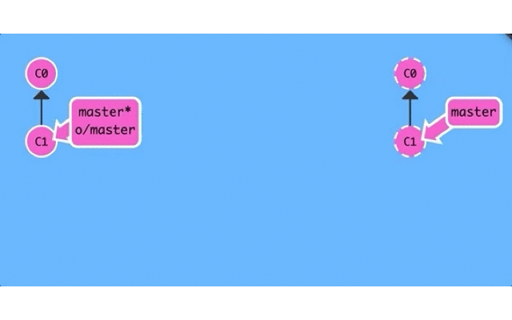

1. 本地和远程仓库的本质
本地仓库和远程仓库在本质上没有太大区别,只不过一个是本地电脑,一个是远程电脑.
远程仓库不一定非得是 github 那种专门的"中央服务器",甚至局域网的另外一台电脑也可以充当"中央服务器"的角色,因为它存在的最初目的只是方便大家交换彼此的提交记录而已!
所以本地仓库和远程仓库的基本行为应该是一致的,约定俗成的规定是远程仓库一般不直接参与日常开发工作,主要作为项目托管中心.
某些自动化持续集成环境中也可能会直接操作远程仓库,这时远程仓库就真的和本地仓库没什么区别了!
1.1. 个人开发常用命令
个人开发看重的是效率,同时兼顾下版本控制的话算是是锦上添花,git 的本地仓库是本地备份,而远程仓库则是网盘备份.
1.1.1. git init : 初始化本地项目
将本地项目初始化 git 项目,直观表现是在该项目同级目录下多了 .git 隐藏目录,其存储着 git 版本库相关信息.
此后当前项目便具备了本地管理的能力,可以与
git进行交互.
1.1.2. git clone : 克隆远程项目
同 git init 一样的作用,也是创建本地仓库,只不过 git init 是直接将本地项目作为本地仓库,而git clone 是将远程项目克隆到本地并作为本地仓库.
由此可见,
git clone比git init多了一层远程仓库的概念.
1.1.3. git add : 添加文件
将工作区的提交记录添加到暂存区,暂存区是工作区和版本库交互的桥梁,暂存区积累到一定量的提交记录时可以批量提交到版本库,这一点暂存区有点像缓存.
1.1.4. git commit : 提交文件
将暂存区的版本提交到版本库,从而形成工作区->暂存区->版本库的基本链路,本地工作区的版本控制流程大致如此.
1.1.5. git push : 推送文件
如果是使用 git clone 命令克隆的本地项目,当工作到一定程度时可能需要将这部分工作成果推送到远程仓库,这时候使用 git push 命令完成本地版本的推送流程.
如果是使用 git init 命令初始化的本地项目,可能没有远程仓库,自然也就不需要推送.如果后来创建了远程仓库,那么你自然是想要将本地仓库推送到远程仓库的,因此你需要准确告诉 git 你要推送到哪个远程仓库.
使用 git remote add origin git@github.com:username/repos.git 命令添加远程仓库信息,这样就建立了本地仓库和远程仓库的关联,以后就可以正常推送到远程仓库了.
1.2. 团队开发常用命令
团队开发注重的不仅是个人效率还有团队的整体进度,随着企业级开发的日趋复杂化,不再是一个人能够独立完成的,更何况时间也不允许慢慢完成,大多数公司采用的是人力换时间的方式,团队并行开发来缩短整个项目周期,这种复杂需求下正是 git 大展拳脚的好机会.
项目整体采用并行开发模式,拆解成不同的功能模块,每个人负责各自模块,模块之间相对独立但也不排除存在交集的可能性.对于每一个个体开发者来说,既需要版本控制又需要团队交流.这时候分支的作用就凸显出来了.
根据项目的业务特点将其拆解成不同的功能模块,这些功能模块分别代表不同的分支,而这些功能模块又组成了完整的项目,这就是主干和分支的关系.
初始时项目是一个整体,中间拆解成不同功能模块,最后再合并成一个整---"分久必分合久必分".
1.2.1. git branch <branch> : 创建分支
每一个独立的功能模块被定义成一个单独分支,创建分支的过程其实是拆解项目的过程,创建本地分支后就在分支上开发特有功能,不再关心其他功能分支.
1.2.2. git checkout <branch> : 切换分支
模块拆解完成并创建了相应的分支后,需要切换到既定分支上才能开展自己的工作.
1.2.3. git merge <branch> : 合并分支
没有绝对的独立,项目再怎么拆分也是整体的一部分,肯定需要和其他功能模块发生关系,某些情况下需要其他分支的工作成果合并到自己的本地仓库中,这样才能完成一次小规模的组装.
可以预期的是,当这种组装足够多的时候,最终便会演变成项目的终极形态,形成一个整体.
1.2.4. git fetch : 抓取远程分支
合并目标分支首先需要能够获取到目标分支的提交记录,既然每个功能模块都是不同的项目成员负责开发的,也就不在我们电脑上,所以我们先要将目标分支下载到我们本地电脑,然后才能合并该分支到本地分支.
1.2.5. git pull : 拉取远程分支
"先下载目标分支再合并到本地分支,从而小规模组成更复杂更强大的功能",每一次的组装过程都需要两步操作者显然不符合懒人思维啊,git pull 就是这两步操作的简化命令,先下载再合并就是这么简单!
1.3. 本地和远程仓库的碰撞
不论是个人开发还是团队开发,我们几乎习惯惯站在主动方的角度来思考问题,有没有想过当远程仓库接收到我们的git push 或 git pull 请求时,远程仓库发什么了什么改变,这种改变对本地仓库又有什么影响?
远程仓库(远程电脑上的本地仓库)只是众多分布式电脑上本地仓库中的一员,说它特殊也很特殊,充当着"中央服务器"作用,其余人统一从这里下载或推送;说它普通也很普通,和本地电脑上的本地仓库没有什么不同,因为它随时可被任意电脑上的本地仓库所取代!
揭开远程仓库的神秘面纱后,现在我们只需要将其视为普通的本地仓库一样对待即可,然而我们本地电脑上已经有了本地仓库,故而需要将远程仓库做一下简单标识区分(origin)称之为远程分支.
先说说
git push命令做了什么?- 对于本地来说,
git将本地仓库的指定分支推送到远程仓库的相应分支,同时更新了本地仓库的远程分支. - 对于远程来说,
git接收到本地仓库的推送请求时应该在相应分支上合并本地分支,同时更新远程仓库的相应分支.
- 对于本地来说,
只要本地的指定分支成功推送到远程的相应分支时,对于本地来说,不论是指定分支还是远程分支(origin/master)都应该是最新状态,因为已经与服务器同步了.
而远程接收到此次推送请求时,应该尝试合并此次推送请求,再更新自己的相应分支,远程合并完成后再通知本地此次推送结果,如此一来,三端同步,皆大欢喜!

再讲讲
git pull命令发生了什么?- 对于远程来说,接收到本地的拉取请求时,因为没有新版本需要处理,所以无需任何操作.
- 对于本地来说,当远程仓库的相应分支下载到本地时应该更新远程分支状态,再尝试合并到本地的相应分支.
git pull命令或者说是git fetch命令是本地和远程通信的方式,所以origin/master会自动更新!

1.4. 小结
本地仓库和远程仓库本质上没有太大区别, git fetch 是本地仓库和远程仓库之间的通信途径,本地仓库中的远程分支(origin/master)保存着它们之间最后一次的通信状态.